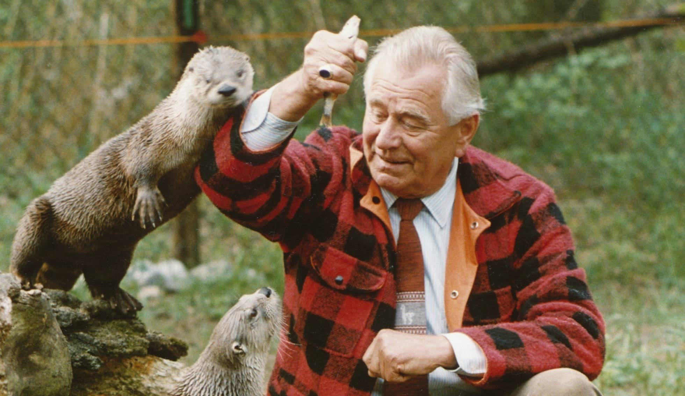

Heinz Sielmann, el ‘señor pájaro carpintero’ que solo cazaba animales con su cámara

2 JUN 2018
Heinz Sielmann admiraba el contacto de su padre por la naturaleza, pero en lugar de aficionarse con una caña de pescar o un rifle, como su progenitor, se dedicó a perseguir animales con unos simples prismáticos. De esta forma tan sencilla el pequeño Heinz descubrió su pasión por las aves, a las que seguía con sus anteojos con algunos sacrificios, como levantarse temprano para observarlas antes de ir al colegio, y también con algunos disgustos, como las malas calificaciones por el mismo motivo.
Heinz Sielmann admiraba el contacto de su padre por la naturaleza, pero en lugar de aficionarse con una caña de pescar o un rifle, como su progenitor, se dedicó a perseguir animales con unos simples prismáticos. De esta forma tan sencilla el pequeño Heinz descubrió su pasión por las aves, a las que seguía con sus anteojos con algunos sacrificios, como levantarse temprano para observarlas antes de ir al colegio, y también con algunos disgustos, como las malas calificaciones por el mismo motivo.
Con los años, Heinz Sielmann cambió almacenar imágenes solo para él por la divulgación, y de sus prismáticos y sus cuadernos pasó a su cámara de fotos y de filmación para capturar animales y dar a conocer sus comportamientos. De esta forma se convirtió en un famoso documentalista científico con un programa estrella durante años en la televisión alemana que también se exportó a numerosos países. Reconocido con premios a nivel internacional, viajó por África para grabar tortugas, gorilas, ardillas,… pero su predilección siempre fueron las aves, hasta el punto de que se le conoce como Mr. Woodpecker (señor pájaro carpintero) por ser el primero que introdujo cámaras en sus nidos y descubrió aspectos desconocidos e íntimos en la relación padres e hijos dentro de los árboles.
Leer mas...
El civismo de las mangostas enanas
29 MAY 2018
Cooperar significa "obrar juntamente con otro u otros para la consecución de un fin común", según la RAE. El concepto no es exclusivo de los humanos; también otras especies animales, como la mangosta enana (Helogale parvula), parecen tenerlo bien claro. Investigadores de Bristol (Reino Unido) han demostrado en un estudio que estos pequeños carnívoros, que viven en grupos de entre 5 y 30 miembros, reconocen a los individuos que han prestado un servicio considerado útil para la comunidad, tienen memoria de esa acción y ofrecen la justa recompensa a quien lo merece más, incluso en un momento posterior. El estudio aporta una nueva evidencia científica al debate sobre hasta qué punto puede desarrollarse la cooperación social entre animales no primates (especies diferentes de los humanos y de los monos), según los autores.
Las mangostas tienen una vida complicada. Las principales preocupaciones de estos habitantes de la sabana de África oriental y meridional son encontrar presas para alimentarse y protegerse de eventuales depredadores. Por eso, si no todos los miembros del mismo grupo colaboran, para estos pequeños carnívoros va a ser difícil sobrevivir. La mayoría de ellos se pasa el día buscando comida. Mientras tanto, algunos se dedican a otra tarea colectiva tan importante como es garantizar la seguridad colectiva. Se trata de los individuos que actúan como centinelas, es decir, vigilan el entorno en el que se mueve el grupo y alertan a los compañeros en el caso de que se materialice algún peligro.
Bruselas quiere prohibir la venta de pajitas, platos y cubiertos de plástico
Bruselas / Madrid 28 MAY 2018
La Comisión Europea ha presentado un plan para acabar con la contaminación que provocan.
La Comisión Europea ha lanzado este lunes una nueva estrategia de lucha contra los plásticos de un solo uso y que incluye la futura prohibición de pajitas o cubiertos de plástico y obligaciones más estrictas para los productores. Las medidas —que tendrán que ser aceptadas ahora por el Europarlamento y los Gobiernos de la UE— intentan atajar uno de los grandes problemas de contaminación generados por el hombre. En estos momentos, solo un 30% de los residuos de plástico de Europa se recogen para ser reciclados. Y buena parte del 70% restante acaba en el mar.
Hay batallas que se libran aunque estén perdidas de antemano. Cada cierto tiempo una noticia habla de cientos de kilos o toneladas de plásticos retirados por un grupo de voluntarios en una playa. En Almuñécar. En La Graciosa. En Cartagena. En Pontevedra. Son solo algunos de los casos del último año en las costas españolas. Es un trabajo desagradecido. Unas semanas o meses después, el mar vuelve a escupir plástico con igual o mayor intensidad. Y de nuevo voluntarios enguantados regresan a la arena para apartar una ínfima parte de lo que flota en los océanos